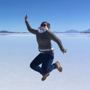
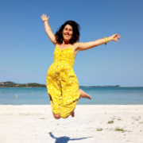
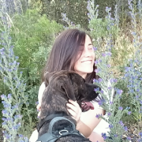
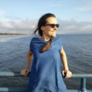
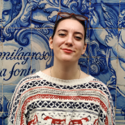

Fear is the path to the dark side. Fear leads to anger. Anger leads to hate. Hate leads to suffering. Fearle.css leads to success!
EQUIPO
Somos un equipo formado por cinco mujeres valientes que nos adaptamos a los cambios, incluso a los de 180 grados. Futuras programadoras Front-End, todas venimos de diferentes ámbitos profesionales y estamos juntas en este nuevo y apasionante
viaje. Es la era de las mujeres en las nuevas tecnologías: es nuestro momento!
Fortalezas
Nuestras decisiones dicen que somos valientes y resilientes, dedicadas a cumplir objetivos y superar los obstáculos, demuestran que somos profesionales y entregadas. Tenemos formación y experiencias variadas, amplias y de calidad, haciendo nuestros perfiles
ricos en conocimientos, competencias ¡y versátiles!
Somos Adalabers
Debilidades
Buscamos el mejor desempeño en nosotras mismas y en nuestros equipos, siempre ¿fortaleza o debilidad? Las horas se nos pasan volando, sin importar con qué y aún buscamos el mejor equilibrio entre el trabajo autónomo y el trabajo en equipo.
QUIENES SOMOS

Camilla Bachna
Estudié Derecho y he trabajado en varios bufetes de abogados y empresas internacionales. Soy una gran apasionada de la digitalización, la música y el café. He vivido en cuatro países y viajado por todos los continentes. Tras llegar a España descubrí mi nueva pasión: el desarrollo Front-End.

Cristina Blanco
Soy project manager en una organización social, donde lidero proyectos educativos relacionados con el desarrollo de habilidades digitales entre la infancia y la adolescencia con menos oportunidades en España. Actualmente, busco enriquecer mi perfil profesional
convirtiéndome en programadora Front-End para ampliar mi visión, mi conocimiento y el impacto de los proyectos futuros que cree o con los que colabore.

Irene Mañas
Diseñadora superior de Moda. Creativa y pragmática, adaptable y organizada, flexible y comprometida, son algunas de las dualidades que conforman mi personalidad. La experiencia en diferentes sectores (textil-moda, marketing-comunicación, docencia, turismo-hostelería)
ha favorecido el ejercicio de diferentes roles en diversos equipos de trabajo.

Laura Portillo
Unas de mis mejores habilidades son la organización y la creatividad, que me han acompañado en mi carrera profesional como Arquitecto trabajando con equipos multidisciplinares e internacionales. Estamos en una etapa de adaptación y ha llegado el momento
de adaptarse a las nuevas tecnologías. La programación encaja con mi forma de ser y estoy encantada de formar parte de este equipo.

Marta Cano
Soy una diseñadora UX/UI que decidió aprender programación para poder plasmar con código los diseños que creaba. Además de haber jugado al rugby durante algo más de diez años (con todos los aprendizajes personales y moratones que eso conlleva) Me considero
una persona proactiva, creativa y con una mente abierta capaz de converger en una gran idea.